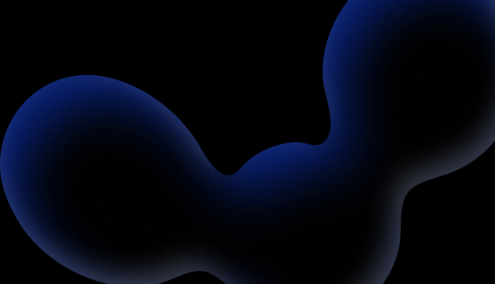
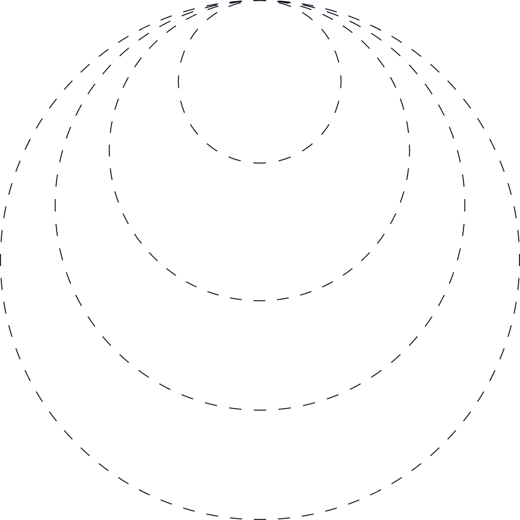
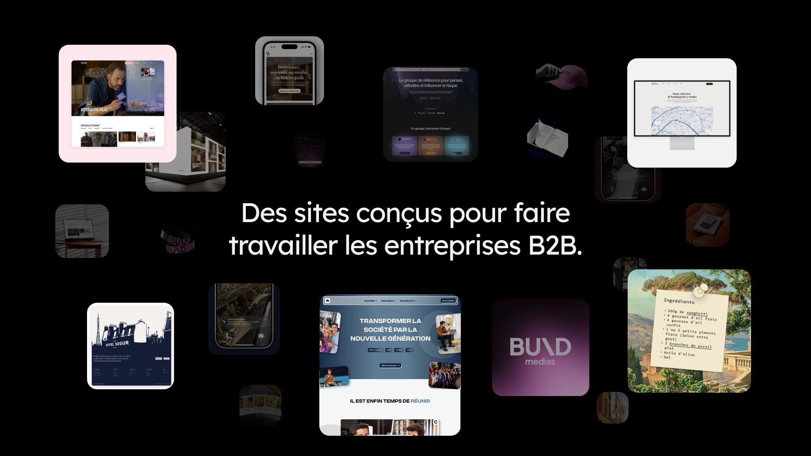
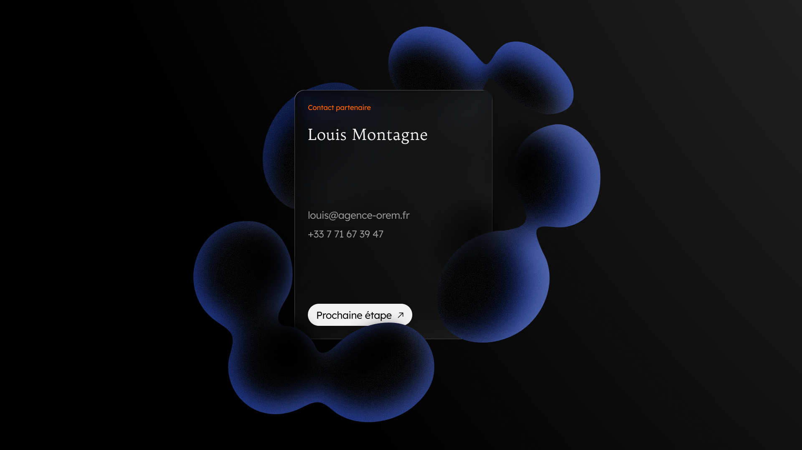

Sundis × Orem
Octobre 2026
Proposition d’accompagnement · Refonte du site Sundis
Structurer une image plus juste de Sundis et un site pensé pour les professionnels

01 · Synthèse exécutive
Repenser le site Sundis comme un outil de clarté, de crédibilité et de contact
Constat
Aujourd’hui, le site de Sundis ne reflète ni le niveau réel de l’entreprise, ni la qualité de son outil industriel, ni la solidité de son positionnement.
Freins
Le discours reste trop générique, les contenus sont partiellement obsolètes, la navigation peut être simplifiée, et plusieurs signaux nuisent à la crédibilité du site, notamment à l’international.
Notre recommandation
- Recentrer l’image et le discours de Sundis autour d’un positionnement plus clair, plus cohérent et plus crédible.
- Refondre le site vitrine pour en faire un outil orienté professionnels, capable de rassurer, orienter et générer des prises de contact qualifiées.
Deux briques complémentaires
Une brique Image / Direction artistique, avec 3 niveaux de profondeur, et une brique Site vitrine Webflow, pensée comme le socle digital de cette nouvelle présentation de marque.
Une articulation recommandée
Les deux prestations peuvent être engagées indépendamment. En pratique, nous recommandons fortement de les articuler, afin de garantir un résultat cohérent, durable et réellement aligné avec les ambitions de Sundis.
Notre recommandation pour Sundis aujourd’hui
Brand Kit Structuré
Refonte du site vitrine Webflow
Pilotage par KPI dès la mise en ligne
02 · Ce que nous avons observé
Un site qui informe, mais qui ne joue pas encore pleinement son rôle
Ce que nous avons observé
À l’issue de nos échanges, plusieurs constats ressortent clairement.
Constat 01
Une image en décalage avec la réalité de l’entreprise
Sundis dispose d’un vrai socle industriel, d’un savoir-faire reconnu, d’une fabrication française et d’une démarche RSE structurée.
Pourtant, le site actuel ne transmet pas suffisamment cette solidité. L’image perçue reste aujourd’hui en dessous du niveau réel de l’entreprise.
Le site donne des informations, mais il ne valorise pas encore assez ce qui rassure un interlocuteur professionnel : la capacité industrielle, la maîtrise, la fiabilité, la structuration de l’offre.
Constat 02
Un discours encore trop peu orienté B2B
Le cœur de cible de Sundis reste constitué de professionnels, en particulier des distributeurs et des acheteurs.
Or, le message du site ne parle pas encore suffisamment leurs enjeux concrets : régularité, capacité de production, conformité, délais, qualité d’exécution, engagement RSE.
Le site a aujourd’hui davantage une posture de présentation générale qu’une posture de réassurance commerciale.
Ce que nous avons observé
À l’issue de nos échanges, plusieurs constats ressortent clairement.
Constat 03
Une structure digitale qui manque de lisibilité
L’écosystème actuel repose sur plusieurs environnements distincts :
- un site vitrine,
- un e-shop,
- et, à terme, un portail professionnel.
Cette organisation peut avoir du sens dans certains cas, mais elle nécessite une hiérarchie claire entre les usages, les cibles et les points d’entrée.
À date, cette lecture n’est pas encore suffisamment évidente.
Constat 04
Des freins concrets de crédibilité et de performance
Plusieurs signaux peuvent aujourd’hui freiner l’efficacité du site :
- contenus partiellement obsolètes,
- informations hétérogènes selon les pages,
- logique de traduction non finalisée,
- expérience mobile et fluidité perfectibles,
- pilotage encore incomplet des conversions et des usages.
“Le site existe, mais il n’est pas encore pleinement exploité comme un levier commercial, de marque et de recrutement.”
Autrement dit
03 · Notre recommandation
Refaire le site, oui. Mais surtout clarifier ce qu’il doit dire, à qui, et dans quel ordre.
5 priorités pour le futur site
Notre recommandation · 1/2
Priorité 01
Recentrer le message sur les professionnels
Le futur site doit adopter un discours clairement orienté B2B. Cela implique :
- un vocabulaire plus directement relié aux attentes des acheteurs,
- une valorisation explicite du savoir-faire industriel,
- une mise en avant plus claire de la fabrication française et des engagements RSE,
- une réassurance plus visible dès les premiers écrans.
L’objectif n’est pas de “parler à tout le monde”, mais de parler correctement à la cible prioritaire.
Priorité 02
Simplifier la navigation pour mieux orienter
Le site doit permettre à un visiteur professionnel de comprendre rapidement qui est Sundis, ce que l’entreprise fabrique, pourquoi elle est crédible, et comment entrer en contact.
Nous recommandons une structure resserrée, plus fluide, avec :
- un menu simplifié,
- une hiérarchie plus lisible,
- un CTA principal unique,
- une logique de navigation pensée pour la lecture commerciale.
Priorité 03
Renforcer la crédibilité par les contenus
Le futur site doit mieux refléter la réalité de l’entreprise à travers ses contenus. Cela passe notamment par :
- une vraie page de présentation de Sundis,
- des pages produits ou références plus crédibles et mieux structurées,
- une valorisation claire des engagements,
- un espace carrière plus attractif et mieux conçu.
5 priorités pour le futur site
Notre recommandation · 2/2
Priorité 04
Faire du site un vrai outil de prise de contact
Le site doit aussi mieux convertir. Nous recommandons pour cela :
- un CTA principal unique : Parler à un conseiller commercial,
- une page contact plus utile,
- une prise de rendez-vous directe en visio,
- des demandes ciblées par produit,
- et une structuration plus propre des informations collectées.
Priorité 05
Poser une base saine pour l’international et le pilotage
Enfin, le site doit permettre à Sundis de mieux exploiter son exposition, notamment à l’export. Cela implique :
- de vraies versions anglaise et espagnole,
- une architecture plus propre pour le référencement,
- une configuration complète de GA4, Search Console et Tag Manager,
- et une logique de suivi centrée sur les conversions réelles.
04 · Brique 1
Image & direction artistique
Donner au site un socle de marque cohérent, exploitable et crédible
3 niveaux de profondeur
- Identité Essentielle
- Brand Kit Structuré, recommandé pour Sundis
- Système de Marque Premium
La refonte du site peut être engagée seule.
Mais dans un projet comme celui de Sundis, la qualité du rendu final dépend fortement de la clarté du socle de marque sur lequel il repose.
Autrement dit : on peut refaire un site sans reprendre la direction artistique.
Mais si l’objectif est d’obtenir un site plus cohérent, plus solide et plus crédible, alors il est fortement recommandé d’y associer un niveau de travail sur l’image.
Brique 1 · Image / Direction artistique
Nous proposons pour cela 3 niveaux de profondeur.
Option 1
Identité
Essentielle
- Poser un socle propre et cohérent.
1 490 € HT
Option 2 · Recommandée
Brand Kit
Structuré
- Construire une charte exploitable, pensée pour un site ambitieux.
3 490 € HT
Option 3
Système de
Marque Premium
- Déployer une architecture de marque plus complète.
6 990 € HT
Option 1
Identité Essentielle
Poser un socle propre et cohérent.
Investissement
1 490 € HT
Ce que permet cette option
Cette option permet de donner au site une base visuelle plus claire, plus homogène et plus exploitable rapidement.
Elle convient à un besoin de remise à niveau simple, lorsque l’objectif est surtout :
- de clarifier les fondamentaux,
- d’unifier le rendu,
- et de repartir sur une base propre sans reconstruire toute l’architecture de marque.
Quand cette option est pertinente
Cette option est adaptée si Sundis souhaite aller à l’essentiel et poser une base plus propre, sans engager un travail complet de marque.
Ce que comprend cette option
- Un moodboard de référence
- Une base couleur structurée
- Une base typographique
- Un socle iconographique simple
- Des principes de composition web
- Un socle logo / variantes essentielles
Option 2 · Recommandée
Brand Kit Structuré
Construire une charte exploitable, pensée pour un site ambitieux.
Investissement
3 490 € HT
C’est l’option que nous recommandons pour Sundis
Elle permet de construire une charte de marque claire, déclinable et réellement utilisable dans le temps, aussi bien pour le site que pour les futurs supports.
Cette option apporte un niveau de structuration plus cohérent avec les enjeux du projet :
- clarifier l’image,
- mieux refléter le positionnement,
- fournir une base exploitable par plusieurs interlocuteurs,
- et sécuriser la cohérence globale du site.
Pourquoi nous la recommandons
Parce qu’elle offre le meilleur équilibre entre ambition, cohérence et niveau d’investissement. C’est, selon nous, le bon niveau pour ne pas sous-traiter l’image du site tout en restant dans un cadre raisonnable.
Ce que comprend cette option
- Un moodboard plus détaillé
- Une direction stratégique synchronisée avec le positionnement
- Une base éditoriale
- Une palette structurée
- Une hiérarchie typographique complète
- Des règles de composition
- Une iconographie définie
- Des objets de style
- Un logo et ses déclinaisons
- 8 à 10 applications visuelles
Option 3
Système de Marque Premium
Déployer une architecture de marque plus complète.
Investissement
6 990 € HT
Ce que permet cette option
Cette option va plus loin dans la profondeur du système de marque.
Elle convient davantage à des marques :
- plus exposées,
- avec plus d’équipes ou de prestataires,
- ou avec un besoin de déploiement large sur plusieurs supports et contextes.
Quand cette option est pertinente
Cette option est pertinente si Sundis souhaite faire de cette refonte le point de départ d’un système de marque plus large, au-delà du seul site.
Ce que comprend cette option
- Une architecture de marque plus complète
- Une direction éditoriale approfondie
- Un système typographique plus riche
- Des règles avancées de composition
- Une iconographie plus développée
- Des éléments d’illustration
- Un public brand kit
- Un UI kit
- Et davantage d’applications
05 · Brique 2
Refonte du site vitrine Webflow
Construire un site plus clair, plus crédible et plus facile à faire évoluer
En parallèle du travail sur l’image, nous proposons la refonte du site vitrine de Sundis sous Webflow. Ce choix permet de concilier :
Qualité d’exécution
Liberté de design
Autonomie côté client
Capacité d’évolution dans le temps
Le périmètre proposé
Investissement du site vitrine
6 630 € HT
01
Socle du site vitrine
- Page d’accueil
- Page “Nos produits”
- Mentions légales
- Page 404
- Formation à la prise en main
- 2 mois d’accompagnement post-lancement
02
Pages standards
- Histoire
- Savoir-faire
- Engagements RSE
- Pourquoi nous rejoindre
- Contact avec prise de rendez-vous
03
Collections CMS
- Une collection Produits
- Une collection Catégories
- Une collection Offres d’emploi
04
International
- Intégration des versions anglaise et espagnole
Note de recommandation
“Nous avons privilégié une logique CMS pour les catégories et contenus évolutifs. L’objectif est simple : permettre à Sundis de faire évoluer le site dans le temps plus facilement, à moindre coût, sans devoir reconstruire la structure à chaque ajout.”
06 · Articulation entre les deux briques
Deux prestations distinctes, mais un projet plus fort lorsqu’elles sont pensées ensemble
5 %
Identité Essentielle
10 %
Brand Kit Structuré
15 %
Système de Marque Premium
Remise de synergie appliquée selon le pack Image choisi, lorsque les deux briques sont engagées ensemble.
Articulation entre les deux briques
La brique Image et la brique Site sont proposées comme deux prestations distinctes. En pratique, sur un projet comme celui de Sundis, elles se renforcent directement :
- la direction artistique donne au site sa cohérence,
- le site donne à la direction artistique son terrain d’expression,
- et les deux, ensemble, permettent un rendu plus juste, plus lisible et plus crédible.
C’est pour cette raison qu’une remise de synergie est appliquée lorsque les deux briques sont engagées ensemble.
07 · Scénarios financiers
Trois niveaux d’ambition possibles
Trois niveaux d’ambition possibles
Option 2 recommandée
Site vitrine Webflow + Brand Kit Structuré : le meilleur équilibre entre ambition, cohérence et niveau d’investissement.
Option 1
7 714 € HT
Option 2 · Recommandée
9 108 € HT
Option 3
11 577 € HT
Option 2 · Recommandée
Site vitrine + Brand Kit Structuré
- Site vitrine Webflow : 6 630 € HT
- Brand Kit Structuré : 3 490 € HT
- Total brut : 10 120 € HT
- Remise de synergie 10 % : -1 012 €
Total facturé
9 108 € HT
Option 1
Site vitrine + Identité Essentielle
- Site vitrine Webflow : 6 630 € HT
- Identité Essentielle : 1 490 € HT
- Total brut : 8 120 € HT
- Remise de synergie 5 % : -406 €
Total facturé 7 714 € HT
Option 3
Site vitrine + Système de Marque Premium
- Site vitrine Webflow : 6 630 € HT
- Système de Marque Premium : 6 990 € HT
- Total brut : 13 620 € HT
- Remise de synergie 15 % : -2 043 €
Total facturé 11 577 € HT
Scénarios financiers
Remise de synergie appliquée lorsque les deux briques sont engagées ensemble.
Ligne
Option 1
Option 2 · Recommandée
Option 3
Site vitrine Webflow
6 630 € HT
6 630 € HT
6 630 € HT
Pack Image
Identité Essentielle
Brand Kit Structuré
Système Premium
Prix du pack Image
1 490 € HT
3 490 € HT
6 990 € HT
Total brut
8 120 € HT
10 120 € HT
13 620 € HT
Taux de remise
5 %
10 %
15 %
Remise de synergie
-406 €
-1 012 €
-2 043 €
Total facturé
7 714 € HT
9 108 € HT
11 577 € HT
08 · KPI attendus et pilotage des résultats
Mesurer ce qui compte vraiment
L’objectif du projet n’est pas simplement de “mettre en ligne un nouveau site”.
L’objectif est de rendre le site plus lisible, plus utile commercialement, plus crédible et plus pilotable. C’est pourquoi nous recommandons de suivre, dès la mise en ligne, plusieurs familles de KPI.

Conversion
Usage et
engagement
SEO et
international
Pilotage des résultats
dès la mise en ligne
Indicateurs suivis
Dès la mise en ligne
KPI 01
KPI de conversion
Ces KPI permettent de mesurer si le site génère réellement plus d’opportunités utiles.
- nombre de demandes de contact,
- nombre de prises de rendez-vous,
- nombre de demandes produit ciblées,
- part des conversions provenant des pages produits,
- part des conversions issues du trafic international.
KPI 02
KPI d’usage et d’engagement
Ces KPI permettent de comprendre si la lecture du site devient plus fluide et plus claire.
- temps moyen passé sur le site,
- temps moyen sur les pages clés,
- nombre de pages vues par session,
- taux d’engagement,
- usage mobile / desktop,
- performances des pages les plus consultées.
KPI 03
KPI SEO et international
Ces KPI permettent de mesurer si le site devient plus visible, mieux structuré et mieux exploité à l’international.
- indexation correcte des pages clés,
- trafic organique sur les pages stratégiques,
- trafic organique sur les versions anglaise et espagnole,
- performance des pages catégories / produits,
- requêtes de marque et requêtes métier,
- qualité d’exploration des collections CMS.
Tendances attendues
01 · Conversion
Augmentation du nombre de prises de contact qualifiées, augmentation du nombre de demandes ciblées par produit, meilleure qualité des leads entrants, meilleure exploitation commerciale du trafic existant.
02 · Usage et engagement
Augmentation du temps de consultation sur les pages stratégiques, amélioration de l’engagement global, baisse de la friction dans les parcours, meilleure compréhension de l’offre par les visiteurs.
03 · SEO et international
Meilleure visibilité organique des contenus stratégiques, meilleure exploitation du trafic étranger, progression de la performance SEO sur les pages les plus importantes, capacité enfin réelle à piloter les performances dans le temps.
09 · Méthodologie de travail
Une approche structurée
en 4 temps
Une approche structurée
en 4 temps
Orienter
Nous clarifions les objectifs, les cibles, les messages prioritaires et la structure du site.
Représenter
Nous traduisons ce positionnement dans une direction artistique, un langage visuel et une logique éditoriale cohérente.
Exécuter
Nous concevons, intégrons et mettons en ligne un site clair, fluide, responsive et administrable.
Mesurer
Nous configurons les outils de suivi, observons les premiers résultats et posons les bases d’amélioration continue.
Un projet pensé pour être cadré, produit, lancé puis mesuré
Le planning détaillé sera affiné une fois l’option retenue validée. À ce stade, nous projetons le travail en 5 grandes phases.
Phase 01
Cadrage
- objectifs,
- arborescence,
- hiérarchisation des messages,
- priorités du site.
Phase 02
Image et direction artistique
- définition ou consolidation du socle visuel,
- validations de la base de marque,
- alignement du système graphique.
Phase 03
UX, contenus et maquettes
- structure des pages,
- hiérarchisation de l’information,
- conception des écrans clés,
- cadrage des contenus.
Phase 04
Intégration et configuration
- développement Webflow,
- intégration des collections CMS,
- versions linguistiques,
- configuration du tracking.
Phase 05
Recette, lancement et accompagnement
- vérifications,
- mise en ligne,
- formation,
- accompagnement post-lancement.
Équipe projet

Clément Saint-Hilaire
Directeur de création.

Théophile Lamouret
Cofondateur & directeur éditorial.

Louis Montagne
Cofondateur & développeur.

10 · Recommandation finale
Notre recommandation pour Sundis
Au regard de vos enjeux actuels, nous recommandons :
- la refonte du site vitrine Webflow selon le périmètre présenté,
- le choix du Brand Kit Structuré pour sécuriser la cohérence de l’image,
- la mise en place d’un suivi KPI dès la mise en ligne.
Investissement recommandé
9 108 € HT
Cette configuration nous semble être aujourd’hui le meilleur équilibre entre :
- cohérence de marque,
- qualité d’exécution,
- lisibilité commerciale,
- et niveau d’investissement.
11 · Prochaines étapes
Pour avancer
Si cette proposition vous semble alignée avec vos enjeux, la suite est simple :
01
Valider l’option retenue
02
Confirmer le lancement du projet
03
Planifier la phase de cadrage
04
Lancer la production selon le planning défini ensemble
Nous pouvons également prévoir un point de présentation complémentaire avec les parties prenantes internes si cela facilite la validation finale.
